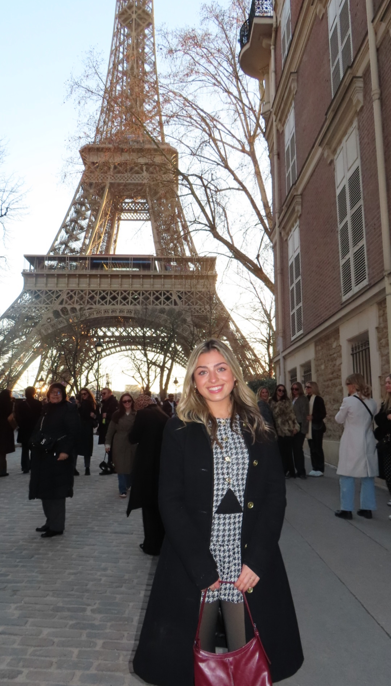
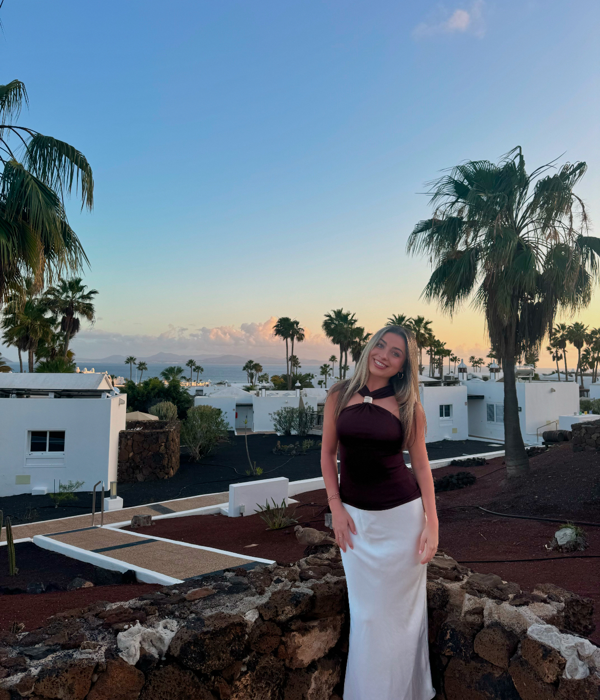

Traveling



Before studying abroad, I had never been outside the country. Traveling always seemed exciting, but it was not until I lived in Barcelona that I truly understood how much it could change me. The city’s vibrant energy, incredible food, and slower pace taught me to appreciate each moment instead of rushing to the next thing.
During that semester, I visited Morocco, Iceland, Switzerland, Florence, Dublin, Lisbon, Budapest, Madrid, Paris, and London. Each trip brought new lessons and fresh perspectives. I learned to adapt quickly, plan ahead, and stay calm when things didn’t go according to plan.
Traveling on my own also made me more independent. Navigating unfamiliar places and cultures gave me confidence and helped me understand how people around the world live differently while sharing common values of connection, family, and happiness.
Studying abroad taught me more than any classroom could. It helped me discover more about myself and the world, showing me there is always something new to learn and experience. Now, traveling is a passion I plan to carry with me throughout my life.